今天我们来聊聊荷兰国旗问题。
1. 问题引入
荷兰国旗问题是荷兰计算机科学家Dijkstra提出的一个排序问题。问题是这样的，荷兰国旗由红，白，蓝三种颜色组成，现在给出一些小球，它们的颜色只有红，白，蓝，现在需要设计一个算法对这些小球排序，使得小球按照红，白，蓝排列。

我们可以对原问题进行抽象，用0代表红色，1代表白色，2代表蓝色，那么原问题本质上就是对一个只含有0，1，2三种元素的数组进行从小到大排序的问题。leetcode上第75题颜色分类，本质上也是一个荷兰国旗问题。
2. 排序
既然是排序问题，那么我们直接对数组排序即可，这个方法简单暴力，因为只有3种数，最好使用计数排序。具体计数排序的代码我就不赘述了。代码如下：
1 | public class ColorSortUsingSort { |
3. 单个指针调整
这个思路是这样的，我们遍历数组一次，把所有的0调整到数组左端；然后再遍历一次，把所有的1，放在0的右边，这样剩下的2必然在1的右边。具体做法就是，使用一个指针p，代表最后一个0出现的位置，p初始化为-1，表示现在还没有找到一个0，然后开始遍历数组，当我们遇到0的时候，此时p的下一个位置一定不是0（因为p表示最后一个0出现的位置），此时这个0要放在p的下一个位置，于是把个0和p的下一个位置交换，因为此时发现了一个0，于是p指针++，当我们遍历完数组，所有的0都被整理到数组左端了。整理1也是同样的方法，只不过p初始化应该是最后一个0出现的位置，而不是-1，如下图所示：

根据这个逻辑，可以写出如下的代码：
1 | public class ColorSortUsingSinglePointer { |
4. 双指针调整
4.1. 调整0和2
只要想办法把0调整到数组的左端，2调整到数组的右端，剩下的1自然会跑到它该去的地方。我们使用指针p表示最后一个0出现的位置，指针q表示第一个2出现的位置。一开始，p初始化为-1，q初始化为数组长度，然后开始遍历数组（注意此时停止条件是当前位置没有达到q）；
如果当前位置的数是0，那么此时我们发现了一个0，根据单指针调整的思路，它应该和p的下一个位置的数交换，同时p++，因为交换过来的数是p的下一个位置，根据p和q的定义，以及循环停止条件可以知道，p的下一个位置的数一定是1，因此i++，
如果当前位置的数是2，那么此时我们发现一个1，根据q的定义，我们应该把这个2放到q的前一个位置，因为q始终指向第一个2出现的位置，于是我们把当前的数2和q的前一个位置的数交换，由于发现了一个2，于是q–-；因为q前面的数还是没有遍历过的元素，所以交换过来的数还需要再次判断，此时i不能++
如果当前位置的数是1，那么无需处理，跳过，i++，整个过程如下图所示：

根据这个逻辑，可以写出如下的代码：
1 | public class ColorSortUsingDoublePointer1 { |
4.2. 调整0和1
这个方法是把所有的0搬到数组的左端，把所有的1搬到最后一个0的右边，这样2就在数组的最右边。我们使用指针p表示最后一个0出现的位置，使用指针q表示最后一个1出现的位置，一开始p和q都初始化为-1，我们从左到右遍历数组，
如果当前元素是0，此时需要看一下p是否等于q，如果p==q那么说明此时我们没有发现一个1，那么只需要让这个0和p的下一个位置交换，然后p++，q++，i++；如果p!=q，说明我们曾经发现过1，因为当前的这个0要放在指针p的下一个位置，所以我们需要先为这个0腾位置，所以我们可以先让当前的0和指针q的下一个位置交换，然后再和指针p的下一个位置交换，然后p++，q++，i++；
如果当前元素是1，那么它需要和指针q的下一个位置交换，然后q++，i++；
如果当前元素是2，不用处理，跳过；整个过程如下图所示：

根据这个逻辑，可以写出如下的代码：
1 | public class ColorSortUsingDoublePointer2 { |
这个方法比上面的方法好一些，是因为当数据是一个一个给我们的时候，我们事先不知道数据有几个，这个方法可以做到实时调整。
5. 赋值
这个方法的思路来自于上面双指针种的第二种方法。假设现在我们遍历到了i位置，最后一个0在p位置，最后一个1在q位置，
如果i位置的数是2，那么此时我们不用管，直接遍历下一个；
如果i位置的数是1，那么此时需要把这个1放到q的下一个位置，然后q++，那么1区域部分会增长1个元素的单位，因为q作为最后一个1的位置，那么q的下一个位置一定是2，因此他会把这个2“挤出去”，那么挤到哪里呢？只能挤到i所在的位置，如下图所示：
如果i位置的数是0，那么此时需要把这个0放到p的下一个位置，然后p++，然而p的下一个位置，原来放置的应该是1，那么这个1会被“挤出去”，会被挤到哪里？会被挤到q的下一个位置，但是q的下一个位置原来放置的是2，那么这个2同样也会被“挤出去”，会被挤到i所在的位置，如下图所示：
因为这个题目只有0,1,2这三种数，因此我们可以写下如下代码。
1 | public class ColorSortUsingAssignment { |
写的再简单一点：
1 | public class ColorSortUsingAssignment { |